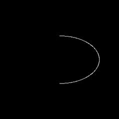

|
类型 |
生成 |
|
描述 |
生成一个椭圆或椭圆弧轮廓，注意起止角度为椭圆的离心角 |
|
语法 |
ZV_ContGenEllipse(cont,cx,cy,ra,rb,angle,stAngle,endAngle[,dist=1])
参数： cont：ZVOBJECT类型，生成的轮廓 cx：椭圆弧中心x坐标 cy：椭圆弧中心y坐标 ra：椭圆弧半长轴 rb：椭圆弧半短轴 angle：椭圆弧旋转角度，顺时针方向，长轴与x轴夹角，单位度数 startAngle：椭圆弧起始角度，范围[-180,180) endAngle：椭圆弧结束角度，范围[-540,540]，椭圆弧方向由起始角度和结束角度决定，当结束角度大于起始角度时，为顺时针，反之为逆时针。endAngle可超过-180/180，以正常描述椭圆弧走向。 dist：椭圆弧相邻点的间距并不相等，dist为允许的相邻轮廓点的最大间距，越小则得到的轮廓点个数越多，默认为1 |
|
适用控制器 |
支持ZV功能或者5系列以上的控制器 |
|
例子 |
 ZVOBJECT cont,img ZV_ContGenEllipse(cont,150,150,100,60,0,-90,90,1) '生成一个中心点坐标为(150,150)，长半轴为100，短半轴为60，角度为0，起始角度为-90，结束角度为90，最大间距为1的椭圆弧轮廓
'绘制生成的轮廓 TABLE(0) = 0 ZV_ImgGenConst(img,300,300,1,0,0) ZV_DraContour(img,cont,255) |